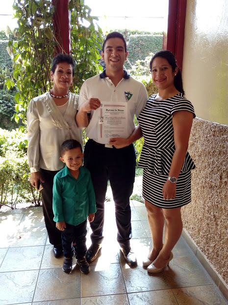

Historial Academico
Etapa primaria y secundaria
Durante mi etapa como niño, realice mis primeros años en el Centro Escolar Organizacion de Estados Iberoamericanos (OEI), centro educativo que se encontraba a escasas calles de mi casa. Estuve ahi por dos años en los que estudie kinder y preparatoria. En dicha institucion tuve mi primer contacto con el aprendizaje de forma directa y me gusto, eso me motivo a aprender e ir mejor preparado para la primaria.
Fui admitido para estudiar la primaria en el Centro Escolar Catolico "Alberto Masferrer", ubicado en Santa Tecla. Dicha institucion fue mi casa durante 12 largos años, ya que permaneci ahi, desde mi primer grado hasta mi tercer año de bachillerato.
Durante esos 12 años me forme en valores cristianos y civicos. Aprendi un sinfin de nuevos conocimientos y poco a poco fui descubriendo el camino que queria en mi formacion como bachiller. Opte por cursar el Bachillerato Tecnico en Contaduria, ya que considere que con un año mas de preparacion y conocimientos basicos de contabilidad y economia podria defenderme mejor en el ambito laboral.
Los tres años de bachillerato los considero muy importantes en mi formacion personal y de madurez personal, tome mayor seriedad y compromiso al estudio y me enfoque en aprobar cad año con el fin de poder entrar directamente el proximo año a la universidad, agradezco a cada maestro y compañeros que estuvieron conmigo en esa misma lucha por querer ser bachilleres e iniciar una vida profesional o de estudios superiores. Agradezco tambien a la directora que basada en su firmeza y caracter forjo con exito a cada uno de mis compañeros y anteriores promociones con el fin de ser ciudadanos productivos para el pais.
Me gradue el 7 de diciembre de 2018 con el titulo de Bachiller Tecnico opcion Contador, y asi colocaba punto final a mis 12 años como estudiante de la que es para mi, la mejor institucion educativa del pais, guardo muchisimos recuerdos de esos 12 largos años ahi, y lo mas importante es que su formacion me permitio poder aplicar a la meior universidad del pais, y quedar admitido, con el el gran logro de poder ingresar a la UCA con una beca de estudio, la cual espero mantener a lo largo de la carrera.
Etapa Universitaria
Mi etapa en la universidad comienza en el mes de febrero de 2018, con el curso preuniversitario, curso que recibe a las personas de nuevo ingreso y les muestra un poco del ambito universitario y a lo que nos afrontaremos a lo largo de la carrera.
Luego de finalizado el curso, dio inicio mi primer ciclo, que me ayudo a adaptarme a los nuevos horarios, las materias y diversas situaciones dentro de la universidad. La carrera que estoy cursando es una Ingenieria Informatica, actualmente curso ya el segundo año y puedo garantizar totalmente que he elegido la carrera correcta, lo se porque cada materia que he cursado me ha gustado y me ha llenado de mucho mas conocimiento, aparte de eso, me ha permitido poder meterme de lleno de las actividaes que la universidad proporciona en cuanto a la formacion integral del estudiantado.
Decidi formar parte de la Comunidad Estudiantil de Ingenieria Informatica, la cual se dedica a formar en conjunto con los estudiantes de los 5 años, una comunidad armoniosa que trabaje en conjunto con los catedraticos para beneficio de la carrera, de igual manera que participemos en actividades de desarrolo integral o cursos complementarios para adquirir mayor conocimiento.
Aparte de mi aprendizaje en estos 3 ciclos que ya he cursado, me ha gustado algunas materias mas que otras y es por ello que me hice parte del programa de Circulos de Estudio, el cual consiste en ser tutor de materias que ya he cursado y asi ayudarles a otros a que tambien puedan salir bien en dichas asignaturas. Este programa me ayuda a poder mejorar en la pedagogia, ya que me gusta explicar y ayudarle a los demas, tambien me interesa ser instructor de otras materias.
En fin, las actividades que realizo aparte de recibir mis clases, me ayudan a formarme de forma integral en todos los ambitos de mi vida.
Cursos extra recibidos
Como parte de mi formacion integral, desde hace años me interese por asistira cursos y talleres complementarios para enriquecer au nmas mis conocimientos. Por mencionar algunos:
- Taller Eneagrama de la personalidad (2016), diploma otorgado por la Parroquia Cristo Resucitado de Santa Tecla.
- Taller de manejo de sistemas de imventario RI, y Engage (2018), taller impartido por Grupo Unicomer.
- Taller de mantenimiento, actualizacion y ensamblaje de equipo de computo (2017), diploma otorgado por el Centro de Orientacion Profesional (COP), dependencia de la UCA.
- Taller de programacion en arduino (2019), titulo otorgado por la Comunidad Estudiantil de Ingenieria Informatica (CEII).